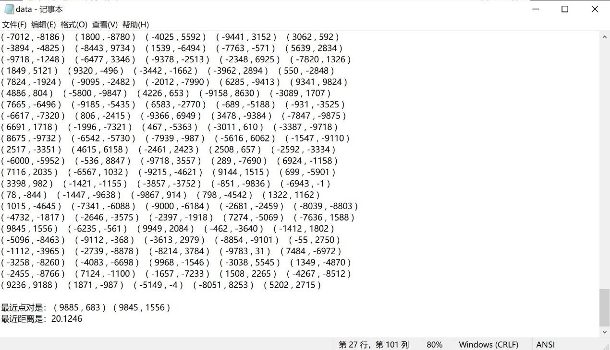
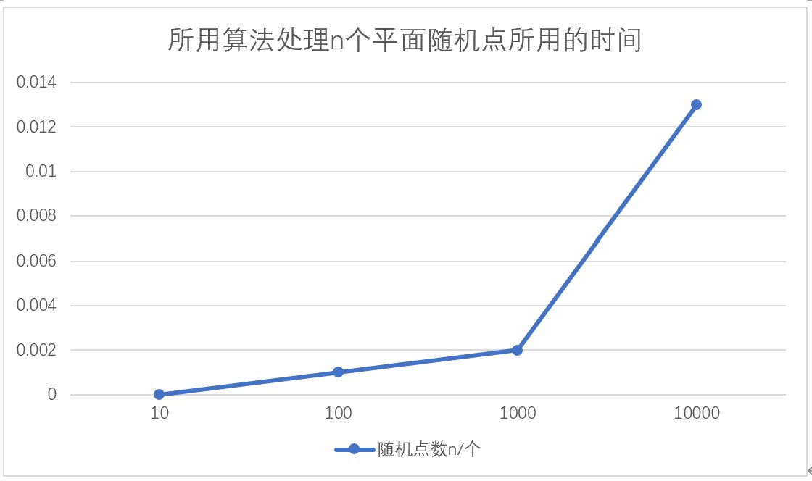

实验要求
采用分治策略实现二维情形下的最近点对问题求解。要求：
1）点的数目n不少于1000个，点的坐标值可以分在[-10000,+10000]较大的区间范围内；
2）二维平面上n个点集X，Y坐标的排序请使用快速排序算法（其他时间复杂度不超过O(n logn )的方法也可；
3）写清算法的设计原理，算法输入，实验结果，对实验结果的分析，算法时间分析（如有需要，可以逐步增长输入点集的规模来看算法耗费时间的曲线）；
4）编程时可以绘制出点的分布图，找到的平面最近点对的距离。
设计原理
在利用分治算法解决此问题时，用一条垂直线L将平面P划分成左半平面P_L和右半平面P_R两部分，使得P_L和P_R的点数近似相等，此时P中的最近点对可能有三种情况：
情况1：两个点都在P_L中
情况2：两个点都在P_R中
情况3：一个点在P_L中，另一个点在P_R中
对于前两种情况，可以分别计算P_L和P_R中的最近点对，这是两个n⁄2规模的问题。对于第三种情况，算法需要找到由一个P_L中的点和一个P_R中的点所构成的最近点对。
假设P_L和P_R中的最近点对的距离分别是δ_L和δ_R，令δ=min{δ_L，δ_R}，那么无论在P_L中的任两点，还是在P_R中的任两点之间的距离都不小于δ。这就是说，如果出现了第三种情况，即由P_L和与P_R中各取一个点构成了P中的最近点对，那么这一对点的距离应该不超过δ，于是，为找到这样的两个点，只需要检查在直线L两边距L不超过δ的窄缝内的点即可。
根据这个设计思想，给出算法伪码描述如下：
MinDistance（P，X，Y）
输入：平面点集P中有n个点，n>1
输出：P中的两个点，其距离最小
1．如果P中点数小于等于3，直接计算其中的最小距离
2．排序X，Y
3．作垂直线L将P近似划分为大小相等的点集P_L和P_R，P_L的点在L左边，P_R的点在L右边
4.Mindistance（P_L，X_L，Y_L）；δ_L=P_L中的最小距离
5.Mindistance（P_R，X_R，Y_R）；δ_R=P_R中的最小距离
6.δ←min{δ_L，δ_R}
7.对于在直线L左边距离δ范围内的每个点，检查L右边是否有点与他的距离小于δ，如果存在则将δ修改为新值
但是此算法在递归过程中排序所耗的时间较大，于是在此算法的基础上，我们可以将排序与递归过程分离，使得排序操作仅在递归过程前和递归过程后，达到减小算法时间复杂度的目的：
将X排序提到了递归算法的外面，在递归中只需要对X做拆分即可。并在最后检查窄缝的时候先进行Y排序，再顺序检查跨边界点对距离。由鸽巢原理可得，在直线L左右两边的窄缝中各至多有6个点，因此至多需要排序和检查12个纵坐标。
核心代码
double Mindistance(P p[],int low,int high){
if (high-low==1) //2点的情形
{
minpoint[0].x = p[low].x;
minpoint[0].y = p[low].y;
minpoint[1].x = p[high].x;
minpoint[1].y = p[high].y;
return Distance(p[low].x, p[low].y, p[high].x, p[high].y);
}
if (high - low == 2) //3点的情形
{
double d1 = Distance(p[low].x, p[low].y, p[low+1].x, p[low + 1].y);
double d2 = Distance(p[low + 1].x, p[low+1].y, p[high].x, p[high].y);
double d3 = Distance(p[low].x, p[low].y, p[high].x, p[high].y);
if ((d1 < d2)&&(d1 < d3))
{
minpoint[0].x = p[low].x;
minpoint[0].y = p[low].y;
minpoint[1].x = p[low + 1].x;
minpoint[1].y = p[low + 1].y;
return d1;
}
else if ((d2<d3)&&(d2<d1))
{
minpoint[0].x = p[low + 1].x;
minpoint[0].y = p[low + 1].y;
minpoint[1].x = p[high].x;
minpoint[1].y = p[high].y;
return d2;
}
else
{
minpoint[0].x = p[low].x;
minpoint[0].y = p[low].y;
minpoint[1].x = p[high].x;
minpoint[1].y = p[high].y;
return d3;
}
}
if (high - low > 2) //递归
{
int mid = (low + high) / 2;
double LeftMin, RightMin;
LeftMin = Mindistance(p, low, mid);
leftpoint[0].x = minpoint[0].x;
leftpoint[0].y = minpoint[0].y;
leftpoint[1].x = minpoint[1].x;
leftpoint[1].y = minpoint[1].y;
RightMin = Mindistance(p, mid + 1, high);
rightpoint[0].x = minpoint[0].x;
rightpoint[0].y = minpoint[0].y;
rightpoint[1].x = minpoint[1].x;
rightpoint[1].y = minpoint[1].y;
if (LeftMin > RightMin)
{
minpoint[0].x = rightpoint[0].x;
minpoint[0].y = rightpoint[0].y;
minpoint[1].x = rightpoint[1].x;
minpoint[1].y = rightpoint[1].y;
MinDis = RightMin;
}
else
{
minpoint[0].x = leftpoint[0].x;
minpoint[0].y = leftpoint[0].y;
minpoint[1].x = leftpoint[1].x;
minpoint[1].y = leftpoint[1].y;
MinDis = LeftMin;
}
//找到两侧距mid不超过MinDis的点
int j = 1;
double middis;
for (int i = mid; (p[mid].x - p[i].x <= MinDis) && (i >= low); i--)
{
midpoint[j].x = p[i].x;
midpoint[j].y = p[i].y;
j++;
}
for (int i = mid+1; (p[i].x - p[mid].x <MinDis) && (i <= high); i++)
{
midpoint[j].x = p[i].x;
midpoint[j].y = p[i].y;
j++;
}
j--;
YQuicksort(midpoint, 1, j); //对窄缝里的点进行Y排序
for (int i = 1; i <= j; i++)
for (int k = i + 1; k <= j; k++)
{
if (midpoint[k].y - midpoint[i].y >= MinDis)
break;
else
{
middis = Distance(midpoint[i].x, midpoint[i].y, midpoint[k].x, midpoint[k].y);
if (middis < MinDis)
{
minpoint[0].x = midpoint[i].x;
minpoint[0].y = midpoint[i].y;
minpoint[1].x = midpoint[k].x;
minpoint[1].y = midpoint[k].y;
MinDis = middis;
}
}
}
}
return MinDis;}
实验结果

算法时间分析


实验总结
分治法的思想就是将一个规模为n的问题分解为k个规模较小的子问题，这些子问题相互独立且与原问题相同。递归地解决这些子问题，再将各个子问题的解合并就得到原问题的解。利用分治法可以简化问题，同时，还可以利用预处理和减少子问题个数等方法改进分治法，使算法更高效，时间复杂度更低。
但此次实验并没有实现预处理，时间分析的时间复杂度是理想情况下的结果。